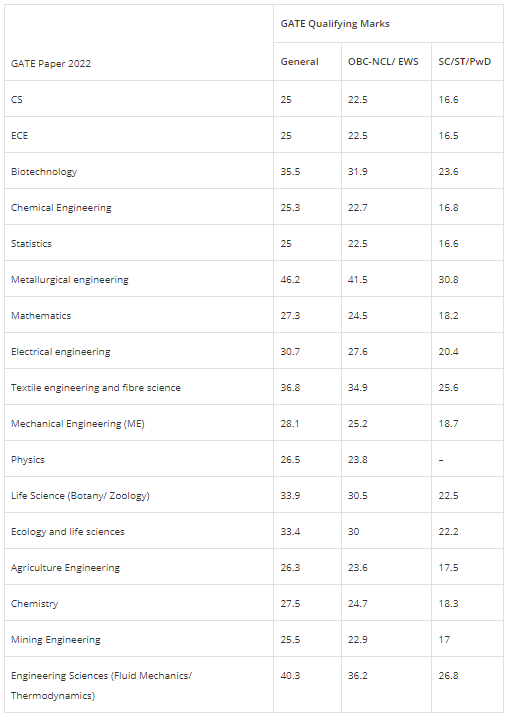
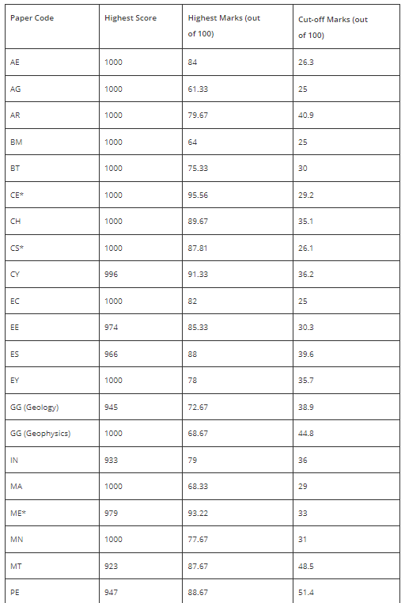

GRADUATE APTITUDE TEST IN ENGINEERING
Graduate Aptitude Test in Engineering (GATE) is a national level exam that primarily tests the comprehensive understanding of various undergraduate subjects in Engineering/ Technology/ Architecture/ Science/ Commerce/ Arts. GATE 2023 will be a computer-based test (CBT) which is being organized by the Indian Institute of Technology Kanpur. The exam will be conducted by IISc Bangalore and seven IITs (IIT Bombay, IIT Delhi, IIT Guwahati, IIT Kanpur, IIT Kharagpur, IIT Madras, IIT Roorkee), on behalf of the National Coordination Board – GATE, Department of Higher Education, Ministry of Education (MoE), Government of India (GoI).
Qualified GATE score can be used for seeking admission and/or financial assistance to : (i) Master’s programs and direct Doctoral programs in Engineering/ Technology/ Architecture/ Science/ Commerce/ Arts; and
(ii) Doctoral programs in relevant branches of Arts and Science, in the institutions supported by the MoE and other Government agencies. GATE score is also used by some colleges and institutions for giving admission to students without MoE scholarship/assistantship. Further, many Public Sector Undertakings (PSUs) have been using the GATE score in their recruitment process.
Organizing Institute for GATE 2023 is Indian Institute of Technology Kanpur.
Eligibility Criteria
GATE Result Date 2023
GATE Marks vs Ranks for top Branches
Previous year cutoffs
2022 Year cutoff
2021 Year cutoff
